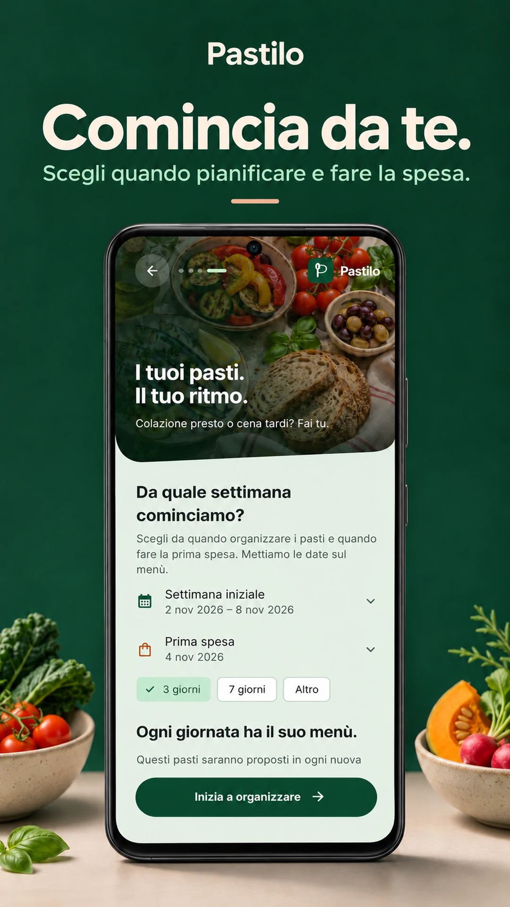
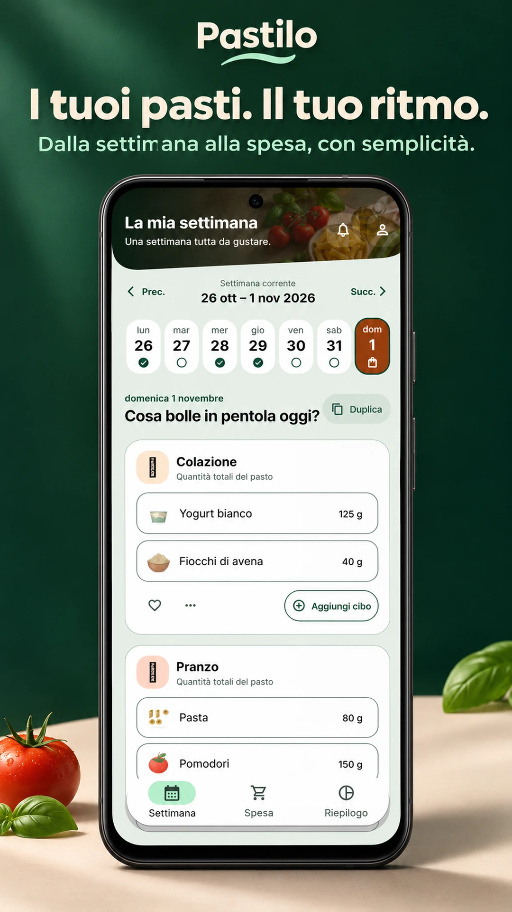
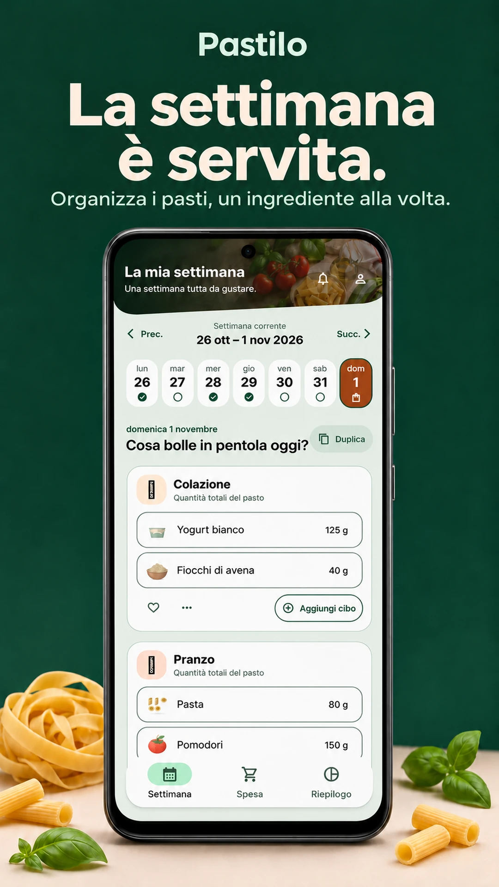
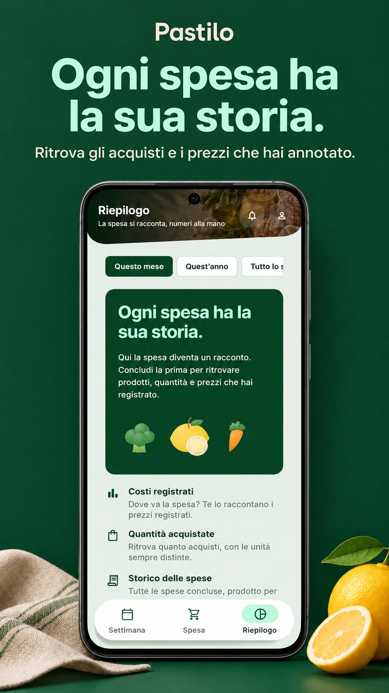
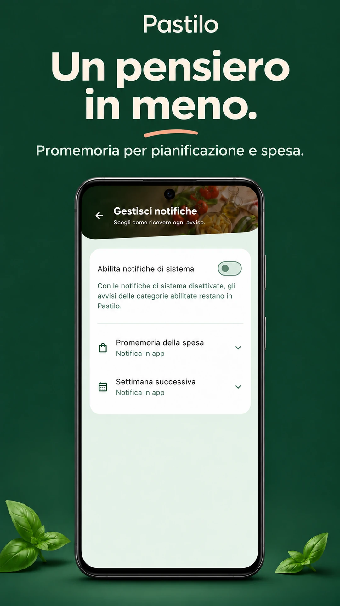

Comincia da te.
Scegli la settimana iniziale, la prima spesa e l’intervallo che funziona per te.
Decidi cosa portare in tavola. Pastilo tiene insieme i pasti della settimana, gli ingredienti da comprare e le spese che vuoi ricordare.

Dalla prima idea al carrello: scorri le funzioni di Pastilo.
Immagini promozionali basate sull’app, con contenuti di esempio.

Scegli la settimana iniziale, la prima spesa e l’intervallo che funziona per te.

Aggiungi alimenti e quantità ai pasti. Riusa i giorni che preferisci, rivedendo le modifiche prima di confermare.

Raccogli gli ingredienti del periodo in una lista. Segna ciò che hai già o comincia direttamente con una lista libera.

Prepara i prodotti, avvia la spesa e riprendila dopo aver chiuso l’app. Annota i prezzi solo se vuoi.

Ritrova le spese concluse e i prezzi registrati, per periodo e categoria. Senza stime sui prezzi mancanti.

Scegli come ricevere i promemoria della spesa e della prossima settimana. Gli avvisi restano sul dispositivo.

Riconosci gli alimenti con le icone Pastilo. Aggiungi anche i prodotti che servono alla tua quotidianità.
Pasti, preferiti e spese rimangono sul dispositivo, senza account Pastilo e senza sincronizzazione su un nostro server. Nessuna dieta automatica: decidi tu cosa organizzare.